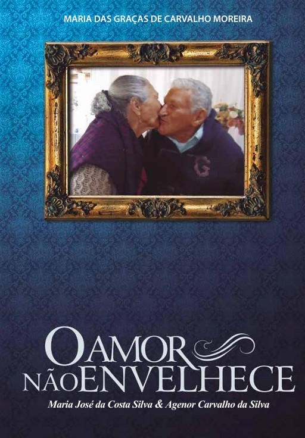
O Amor não envelhece
Maria José da Costa Silva & Agenor Carvalho da Silva
Vila Velha - Espírito Santo - 2024
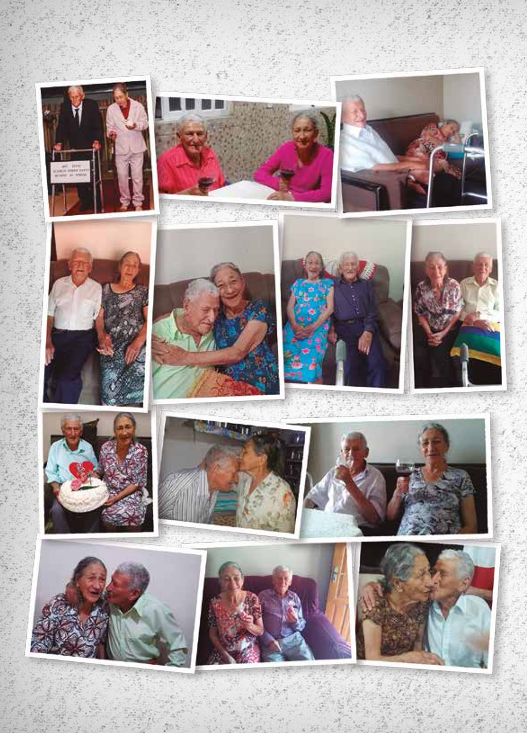
O AMOR NÃO ENVELHECE - 74 ANOS DE CASADOS
Era uma segunda-feira de fevereiro, no ano de 1950, mais precisamente no dia 27.
Foi uma maratona! O padre da paróquia de São João Evangelista em Minas Gerais disse ao noivo que iria celebrar seu casamento na Paróquia de Correntinho, cidade onde estaria naquela data.
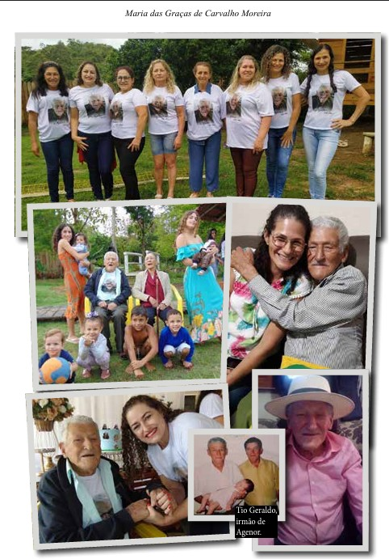
Chegara o tão sonhado dia! Agenor e Maria colocaram suas roupas simples do casório em uma sacola e para não sujar os sapatos andaram descalços, da fazenda das palmeiras, um povoado próximo a São João Evangelista, até Correntinho, um caminho de aproximadamente vinte quilômetros.
Eram as primeiras horas daquela segunda-feira, quando chegaram à igreja acompanhados de familiares. Chovia, e não era pouco!
O barro amassado daqueles vinte quilômetros de estrada não lhes era empecilho. Precisaram parar em casa de algum conhecido para se lavarem e vestirem o tão esperado traje do casamento. Estariam usando sapatos pela primeira vez! Ainda que o calçado da noiva fosse preto e não branco para compor o tradicional traje de casamento, isso não tinha grande importância para quem estava a um passo de viver um dos momentos mais sublimes da vida. Os pés descalços, corpo molhado de chuva, barro nos pés, quilômetros a pé, nada disso era suficiente para apagar o brilho, a beleza e a alegria daqueles corações apaixonados e forjados pelas rudezas da vida!
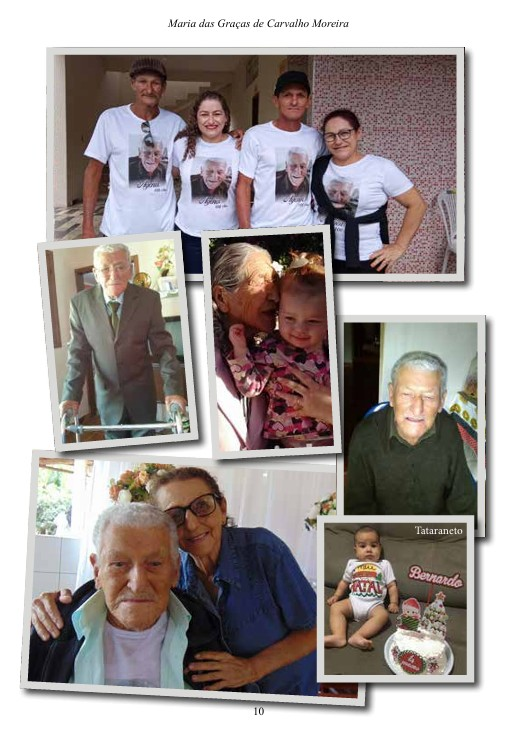
Sentados naquela capelinha, qual não fora a surpresa do noivo quando o padre se aproximou e lhe perguntou: “Você pediu uma carta de licença para se casar nesta igreja?” Ao que lhe respondeu: “Não, senhor! Quando o senhor me disse que seria aqui, compreendi já ter essa licença!”. “De forma alguma”, respondeu o padre. “Faço o casamento até em meio à estrada, mas aqui não posso”. Saíram da capela, trocaram suas roupas e voltaram outros nove quilômetros até uma fazenda, onde colocaram suas vestes de matrimônio pela segunda vez, e enfim foi realizada a cerimônia.
Maria casou-se aos dezessete anos e já havia tido algumas perdas que marcaram sua vida. Ana, sua mãe, falecera quando Maria tinha apenas três aninhos de idade. Foi separada de sua única irmã, Tercilia, de um ano e meio. Foi morar com sua avó Augusta que, poucos anos depois daqueles dias, também faleceu.
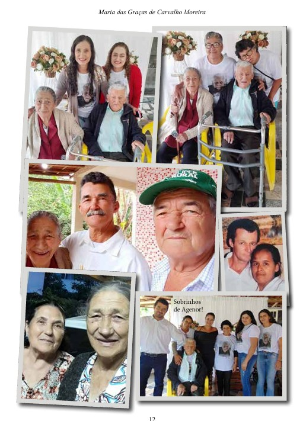
Desta vez foi morar com sua tia Geralda, mãe de seis filhos, sendo todos menores de onze anos. Maria ainda tinha apenas doze. A partir de então tornou-se babá de seus primos.
Maria agora já era uma adolescente de quatorze anos. Os dias se passaram, sua tia Geralda adoeceu e pouco depois faleceu. Maria se tornara mãe de seus irmãos adotivos. Não demorou muito e o bebê que ainda era amamentado pela mãe, faleceu. Maria seguiu cuidando de seus irmãos até o dia de seu casamento.
Assim como Maria, Agenor teve uma vida nada fácil. Filho de Dimas e de Izaltina, Agenor era gêmeo de Agenário, sendo ao todo oito irmãos.
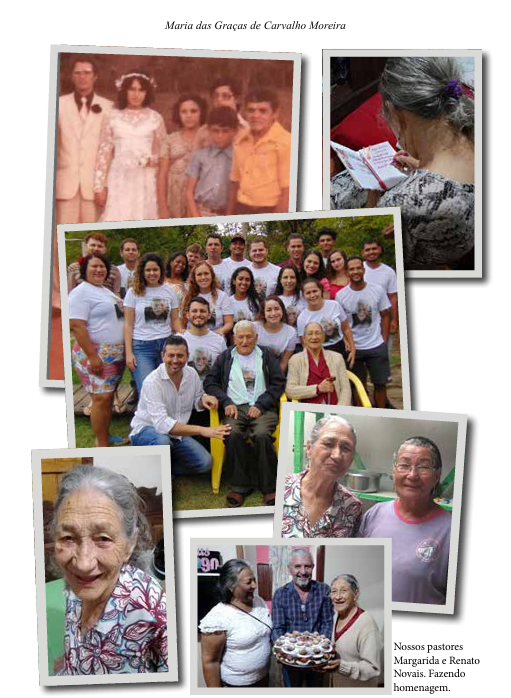
José, carinhosamente chamado por eles de Juca, era o mais velho, uma criança especial que só aprendeu a sentar e andar aos três anos de idade quando viu seus irmãos gêmeos andarem.
Quando já eram todos adolescentes, Otacílio, que tinha 14 anos, levou uma queda ficando bem machucado. Sem recursos para tratamento, faleceu depois de gemer em um leito por alguns meses, e, lamentando, dizia: “não queria morrer agora!”.
Passou-se um ano, faleceu também seu pai Dimas aos quarenta e seis anos de idade, em decorrência de uma picada de cobra. Agenor então, responsabilizou-se por sua família, assumindo a posição de seu pai aos quinze anos de idade.
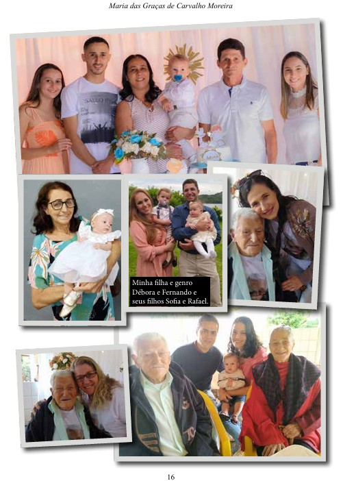
Trabalhava de meeiro para os fazendeiros adjacentes das cidades de Correntinho e São João Evangelista. Assim, cuidou de sua mãe e de seus irmãos, até estes se casarem, exceto Juca. Quando Agenor conheceu Maria, morava apenas com sua mãe e seu irmão Juca. Casou-se aos vinte e oito anos e levou os dois para morarem consigo.
Tiveram quatorze filhos. Perderam um, vítima de um aborto espontâneo e duas meninas, a primeira e a quarta dos filhos, as quais vieram a falecer com pouco mais de um ano de idade. Após alguns anos faleceu também o terceiro filho, Antônio, pai de seis filhos, vítima de um acidente, aos sessenta anos.
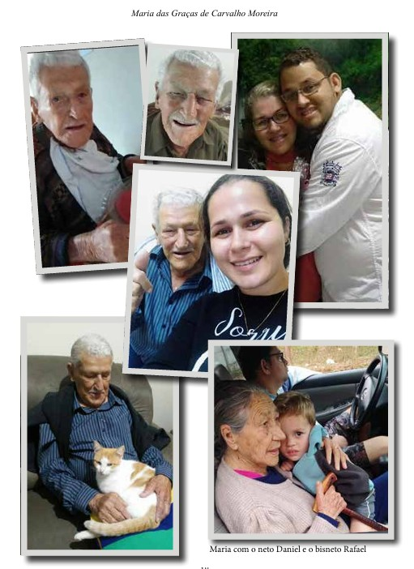
Nasceu Maria da Conceição, primogênita do casal. Já andava pela casa e falava as primeiras palavras. Um dia acordou com dificuldades para respirar. Tudo indicava que havia aspirado alguma semente a que esteve exposta no dia anterior, quando aproximou-se de um monte de feijão que havia sido debulhado. Para a tristeza do casal, faleceu sua primeira filha. Agenor precisava sair para trabalhar, às vezes um pouco longe de casa, e Maria ficava na companhia de Zuri, seu cachorro, que a observava sentado a seus pés, parecendo entender sua dor!
Maria começou ter dores de dente, e como dentista era um profissional difícil de se encontrar naqueles arredores, além do dinheiro ser escasso, Maria usava uma planta que, ao mastigar, anestesiava. Também teve a ideia de acender um cigarro de palha e segurar a fumaça na boca até que tivesse sensação de alívio e então adormecia. Foi assim que aprendeu a fazer seu próprio fumo, próprio cigarro, servindo também como distração e continuaria a fazer pela vida. O fumo, porém, possuía outras serventias, como tratamento de machucados, e juntando-o ao azeite extraído da mamona, seria o tratamento do umbigo de todos seus filhos recém-nascidos! Um santo remédio!
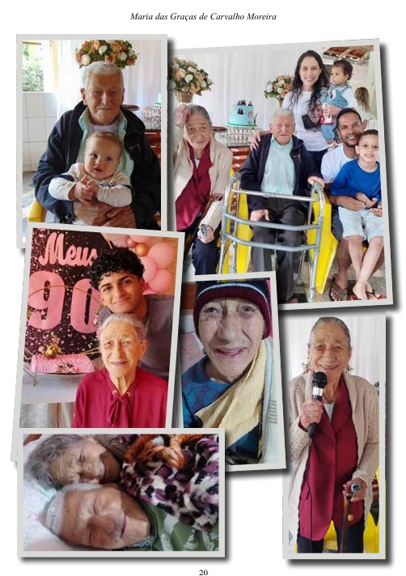
Agenor também acompanhava Maria preparando e fumando juntos o cigarro de palha. Agenor, mais ou menos aos oitenta anos descobriu um início de enfisema pulmonar e decidiu deixar o velho cigarro de palha. Não querendo contrariar Maria, nunca cobrou que deixasse aquela dependência, e então continuava ajudando-a fazer, mas já não a acompanhava no uso. No entanto Maria, aos noventa e um anos, também deixou de fumar e agradeceu muito a Deus porque achava que jamais conseguiria.
Veio a segunda filha, Maria Aparecida, depois o Antônio, o Francisco e a Mônica. Esta veio a falecer quando já andava e falava. Puxou sobre si uma vasilha de água que esquentava, para tomarem banho de bacia. Certamente, foi este um dos maiores golpes sofrido por aqueles pais e irmãos, estes ainda bem crianças.
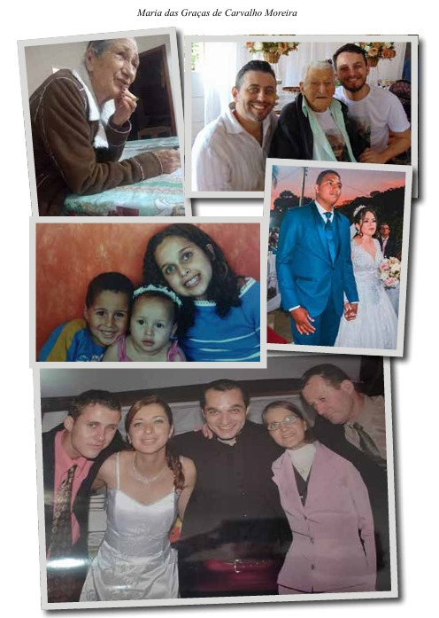
Os pais e avós de Agenor haviam perdido suas terras. Foram tomadas por pessoas que afirmavam existir dívidas de impostos sobre elas e diziam ainda serem pertencentes à justiça, contudo, estando longe dela. De forma ameaçadora, lhes surrupiaram a fazenda.
Agenor seguia trabalhando a meia ou a terça para seu sustento. Ainda trabalhava alguns dias exclusivamente para o patrão, como forma de pagamento de aluguel, por morar em suas terras. Seus filhos cresciam e também se juntavam a ele. Faziam de tudo: lavavam as grandes trouxas de roupas dos patrões, com o sabão que eles mesmos produziam a partir de cinzas, cozinhavam para os trabalhadores, tanto da família como para os contratados dos patrões e ainda transportavam o alimento até eles. Agenor e Aparecida, a primeira das filhas, colocavam uma rodilha de pano sobre a cabeça, onde apoiavam uma grande gamela cheia de panelas de ferro. Assim era levado o almoço e o café da tarde.
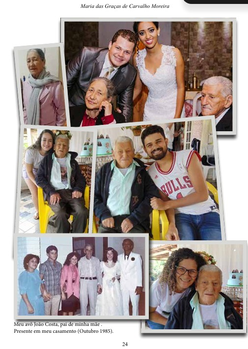
Moravam em um rancho, Fazenda das Palmeiras, até o nascimento de sua sexta filha, Maria de Lourdes. Quando nasceu esta, Maria mandou Juca ir até a sede comprar um litro de leite. O dono da fazenda por sua vez, mandou apenas meio litro, depois de muito reclamar, dizia ele não poder vender, pois desfalcaria a quantidade que era exclusiva para a produção dos queijos.
Vivendo em meio a tanta pobreza, e inúmeras maldades praticadas por aquele fazendeiro, foi então que Agenor resolveu mudar de cidade. Maria já estava grávida da sétima filha, a quem deu o nome de Ana, uma homenagem à memória de sua mãe biológica, Ana Augusta. Foi em 1963, quando chegaram em Laranjeiras, um povoado próximo à cidade de Cantagalo, distrito de Peçanha, cidade centenária, que fica a dez quilômetros do povoado.

Agenor e Maria, apesar de terem estudado apenas o segundo ano das séries iniciais, levaram todos os filhos à escola, onde faziam até o quarto ano das séries iniciais. Era o que tinha naquela região ofertado pelo governo. Eles sempre estimulavam os filhos à leitura, ainda que fossem os jornais que vinham como embrulho das compras que Agenor fazia nas pequenas vendas da região.
À noite, todos sentavam na cozinha, em um banco de madeira, próximos ao fogão a lenha, onde se aqueciam do frio de Minas Gerais. Maria limpava a garapa e fazia um delicioso café, que era degustado com um bolinho de fubá, assado sob um prato de brasas. Às vezes, bananas, batatas ou milho verde assado. Comiam enquanto contavam histórias e estórias para os filhos, quase sempre usando parábolas que visavam uma preparação para a vida.
Em 1971, Antônio foi trabalhar em Seis Horas, um patrimônio próximo a Marilândia, localizado no interior do Espírito Santo. Após estabelecer-se em uma fazenda, voltou a Minas Gerais e retornou trazendo consigo a família, por ser uma região próspera e de grandes cafezais. Foi o melhor período financeiro na vida de Agenor. Quando recebeu o dinheiro da colheita, exclamou: “Nunca peguei tanto dinheiro em toda a minha vida!”. Mas a alegria de Agenor durou pouco. Antônio era o que costumavam dizer, “o pé de boi” de Agenor.
Com apenas dezessete anos, já era noivo de uma paixão que durara desde a infância. E quando estava com todos os móveis comprados para se casar, recebeu uma carta de sua noiva terminando tudo. Essa desilusão o fez voltar a Minas Gerais com toda a família, exceto Aparecida, a mais velha das filhas, que foi para Vila Velha, no Espírito Santo, trabalhar em casa de dona Juventina e do senhor Teodoro, família Milanês, que morava no bairro Paul. Ali ganhava seu dinheirinho, usando-o sempre para ajudar seus pais. Aparecida foi uma segunda mãe para seus irmãos. Sempre preocupada em socorrê-los em suas necessidades. Teve um trauma em sua adolescência, pois aos quinze anos havia ido ao dentista e descoberto uma doença na gengiva. O dentista deu como solução extrair todos os dentes, e isto não ficaria barato, incluindo a prótese que seria feita pelo tal dentista. Para “resolver” o problema precisou pegar dinheiro emprestado. Tal catástrofe nunca fora esquecida.
Não posso deixar de contar o milagre! “Milagre”, é como Maria costuma chamar seu filho Francisco. Este, quando adolescente, foi trabalhar de caixa em um bar. Ali aprendeu a beber e viveu cerca de no mínimo vinte e cinco anos de sua vida sem um rumo certo. Apesar de ter aprendido a dirigir ainda bem novo, sempre sonhando em trabalhar como motorista, até então não conseguia. E mesmo tendo trabalhado em boas empresas, ser querido por onde passava, acabava sempre desempregado, devido ao vício do álcool. Certa vez, pediu conta numa sexta-feira e na segunda não se lembrava do feito. Sua mãe e sua irmã Aparecida foram as que mais sofreram com esses fatos. Foram tantas as vezes que saía de casa arrumadinho, bem cuidado, de malas nas mãos e eis que de repente, telefonava dizendo estar dormindo na rodoviária de Belo Horizonte ou de São Paulo. Depois de tantas pelejas, certa vez adoeceu e ficou em coma no hospital de Peçanha, em Minas Gerais, por dez dias. Geralda viajou de Vila Velha - ES para Cantagalo, levando um óleo de unção entregue a ela por Maria, sua irmã. Aparecida ligou para sua mãe instruindo como deveria fazer, ungindo os lábios dele com aquele óleo e dando ordem para que ele acordasse e levantasse curado, em nome de Jesus.
Naquela noite, Maria debruçada na janela da sala, olhava as estrelas no céu enquanto ouvia um pregador de uma igrejinha no final da rua. O silêncio da noite, naquela cidadezinha do interior, era quebrado por uma pregação sobre a ressurreição de Lázaro. Maria, ouvindo aquela palavra, orava dizendo: “Senhor, eu creio que por seres Tu o dono da vida, retirou Lázaro daquela sepultura, já havendo se passado quatro dias morto. Logo sei que, o Senhor pode também tirar o meu filho daquele leito de hospital, onde se encontra como morto, há dez dias. Creio e espero no Senhor esse milagre, amém!”. No outro dia, tendo ido ao hospital, fez como Aparecida havia instruído, ungindo a boca de Francisco dizendo: “Assim como Jesus deu ordem e Lázaro ressuscitou, eu também te ordeno, levanta-te!”. Sentou-se e uma hora após a oração, Francisco acordou do coma, perguntando onde e porquê estava ali. Em seguida perguntou se já era hora do almoço, pois estava com fome. Maria providenciou um alimento. Francisco após alimentarse, levantou-se e foi para casa.
Algum tempo depois conheceu Marilda, com quem se casou. Tiveram três filhos. Passou num concurso de motorista para a prefeitura da cidade. Em 2023 aposentou-se por tempo de trabalho. É um milagre, como o chama sua mãe. E esse milagre vai visitá-la todos os dias mais de uma vez para tomar um café e ter um “dedin de prosa”.
Aos 65 anos Agenor aposentou-se e durante bons anos recebia apenas meio salário (sete cruzeiros), por isso ambos continuaram trabalhando. Então a fazenda em que eles trabalhavam foi comprada pelo senhor Erasmo Dias, fazendeiro que morava em São Paulo. A fazenda era situada no povoado de Córrego de Laranjeiras. Erasmo Dias foi o melhor patrão que tiveram. Quando houve a primeira colheita e o senhor Erasmo veio visitar a fazenda, Agenor apresentou ao patrão a safra pronta para ser levada. Ficou surpreso ao ouvir da boca do patrão que não levaria nada. Disse que não era necessário, pois na cidade de São Paulo tinha muito e que Agenor poderia ficar com a colheita. Senhor Erasmo além de ter lhe dado toda a ceifa, também lhe deu duas novilhas que foram vendidas. Ao vender a fazenda, pagou a Agenor o tempo trabalhado. Foi então que as economias de Agenor aumentaram e com ajuda de sua filha Ana, adquiriu sua casa própria.
Pequena, simples, mas considerada um palácio. No dia 17 de novembro de 2021, Agenor completou 100 anos de vida e conseguiu reunir toda a família para comemorar. No dia 12 de setembro de 2023, Maria completou 91 anos de vida. Irão completar 75 anos de casados no dia 27 de fevereiro de 2025. Possuem hoje 24 netos, 13 bisnetos e 1 tataraneto. Devido a Agenor ter duas próteses femorais, só consegue andar com auxílio de um andador, mas sem perder o bom humor, sempre falando versos pela casa. Costuma dizer: “Maria é minha duas vezes! Primeiro porque eu fiz seu registro de nascimento, que até as vésperas do casamento não possuía e segundo, porque me casei com ela!”: “Maria, teus olhos são minha morte! Se eu não me casar com você, vou pra Mata do Norte, deixando o estado de Minas pro mineiro que tem sorte!”
POESIA - Homenagem
Vou contar-lhes uma história
De um grande homem guerreiro.
Nascido em um cantinho,
Deste solo brasileiro.
Em sua terra mineira,
De tudo ele plantou:
Milho, feijão, arroz, cana e café.
Não deu pra guardar dinheiro,
mas sempre guardou a fé.
Entre plantio e colheita
Também trabalhou com gado,
Tirando leite das vacas,
Chovendo ou fazendo sol,
Estas não dão feriado.
Puxando aquele cargueiro,
Queijo, leite ou cereais;
Puxando a velha enxada,
Foice, machado ou facão.
Aquele homem guerreiro,
Trabalhando de meeiro,
Enriqueceu fazendeiros,
no chão de Minas Gerais.
A Sagrada Escritura
Promete abençoar,
Dando bençãos sem medidas,
Com muitos anos de vida,
A quem nela confiar.
Honrando o pai e a mãe,
Sem nunca os abandonar.
O nosso grande guerreiro
É um homem afortunado.
Completou há poucos dias
Setenta e três anos casado.
Nas mãos de sua esposa,
Seus bens são multiplicados.
Seus filhos são treze flechas
Na aljava do guerreiro,
Lançados em várias partes
Deste solo brasileiro,
Onde sempre prosperaram
Sem se esquecer do Guerreiro.
Por ter honrado seus pais,
Vem cumprindo as Escrituras.
Quem o conhece, é testemunha,
De um guerreiro milionário!
E, parabéns ao Guerreiro,
Que já é um centenário!
AGRADECIMENTOS
Agradeço a Deus por me conceder tamanho privilégio de com os meus olhos poder contemplar na terra dos viventes a longevidade de meus pais e, como ele mesmo sempre diz: Bom é poder dizer, “ MINHA NETA, DÊ-ME CÁ O TEU NETO!” Agradeço à minha família que sempre está unida em todas as circunstâncias.
SOBRE A AUTORA
Maria das Graças de Carvalho Moreira nasceu em 23 de fevereiro de 1966, natural de Cantagalo, Minas Gerais - Brasil. Licenciada em pedagogia pela “ Faculdade Educacional da Lapa” Paraná - SC e em Letras Libras pela “Faculdade IBRA Instituto Brasil de Ensino e Consultoria” em Caratinga - MG.
PAIS E AVÓS: Agenor Carvalho da Silva, filho de Izaltina Maria de Carvalho e Dimas José de Carvalho. Maria José da Costa Silva, filha de Ana Augusta da Silva e João de Deus Costa.
FILHOS: Maria da Conceição da Silva (in memoriam), Maria Aparecida da Silva Borgo, Antônio Eustáquio da Silva (in memoriam), Francisco de Assis Carvalho, Monica Carvalho da Silva (in memoriam), Maria de Lourdes Carvalho Nascimento, Ana Carvalho da Silva, Maria das Graças de Carvalho Moreira, Geralda Aparecida de Carvalho, Luiza Helena de Carvalho Bessa, Dimas Carvalho da Silva, Izaltina Carvalho da Silva, Ângela Carvalho da Silva Rosa.